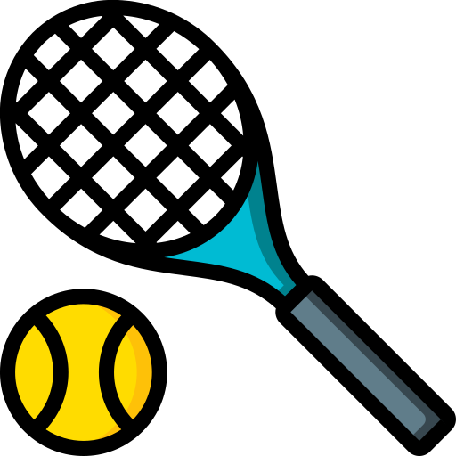

tipos de tenis
5/nov/2021
tipos de tenis
hay diferentes tipos de tenis desde tenis para realizar deporte hasta tenis para un dia normal o para ir a trabajar es increible como el negocio de los tenis se a incrementado increiblemente por que hay tenis extremadamente caros hay tenis que llegan a costar hasta 200 mil pesos y lo mas increible es que hay gente que los compra ya que segun la bbc hoy la industria del calzado genera US 55.000 millones en todo el mundo ,segun datos del 2017,estados unidos lidera el mercado con cerca del 40 por ciento de las ventas,le sigue china con el 10 por ciento,segun la revista forbes la industria incluso tiene su propio mundo bursatil llamado stokx que registra mas de 20,000,despues de ver esto hablaremos de como cuidar tus tenis pues la verdad es muy facil ya que por ejemplo si tu tienes unos jordan y no quieres que se te marquen las arrugas pueden comprar unas placas que sirven para que cuando camienes el tenis no se doble y no se le hagan arrugas tambien hay un producto para la suela que sirve para cuando vas a caminar por tierra o lodo le pones este producto en la suela que es como un tipo stiker y asi cuando camines por el suelo sucio tu planta del tenis no se ensuciara ni le pasara nada.